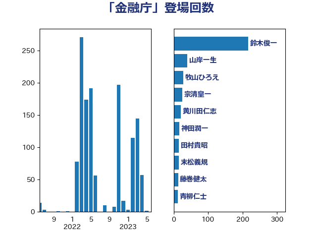

単語「金融庁」

| 鈴木俊一 | 自由民主党 | 216 回 |
| 山岸一生 | 立憲民主党 | 40 回 |
| 牧山ひろえ | 立憲民主党 | 28 回 |
| 宗清皇一 | 自由民主党 | 25 回 |
| 黄川田仁志 | 自由民主党 | 21 回 |
| 神田潤一 | 自由民主党 | 16 回 |
| 田村貴昭 | 日本共産党 | 15 回 |
| 末松義規 | 立憲民主党 | 15 回 |
| 藤巻健太 | 日本維新の会 | 13 回 |
| 青柳仁士 | 日本維新の会 | 12 回 |
| 杉久武 | 公明党 | 12 回 |
| 古賀之士 | 立憲民主党 | 12 回 |
| 西村智奈美 | 立憲民主党 | 11 回 |
| 杉尾秀哉 | 立憲民主党 | 11 回 |
| 岬麻紀 | 日本維新の会 | 11 回 |
| 大塚耕平 | 国民民主党 | 11 回 |
| 塚田一郎 | 自由民主党 | 11 回 |
| 上田勇 | 公明党 | 11 回 |
| 階猛 | 立憲民主党 | 10 回 |
| 藤丸敏 | 自由民主党 | 10 回 |
| 自見はなこ | 自由民主党 | 10 回 |
| 稲津久 | 公明党 | 10 回 |
| 浜田聡 | NHK党 | 10 回 |
| 平木大作 | 公明党 | 10 回 |
| 加藤勝信 | 自由民主党 | 10 回 |
| 下条みつ | 立憲民主党 | 10 回 |
| 大串博志 | 立憲民主党 | 9 回 |
| 勝部賢志 | 立憲民主党 | 8 回 |
| 豊田俊郎 | 自由民主党 | 7 回 |
| 若宮健嗣 | 自由民主党 | 7 回 |
| 稲富修二 | 立憲民主党 | 7 回 |
| 沢田良 | 日本維新の会 | 7 回 |
| 空本誠喜 | 日本維新の会 | 6 回 |
| 熊谷裕人 | 立憲民主党 | 6 回 |
| 村田享子 | 立憲民主党 | 6 回 |
| 藤岡隆雄 | 立憲民主党 | 5 回 |
| 萩生田光一 | 自由民主党 | 5 回 |
| 神谷宗幣 | 参政党 | 5 回 |
| 田中健 | 国民民主党 | 5 回 |
| 浅川義治 | 日本維新の会 | 5 回 |
| 池下卓 | 日本維新の会 | 5 回 |
| 森山浩行 | 立憲民主党 | 5 回 |
| 松野博一 | 自由民主党 | 5 回 |
| 伴野豊 | 立憲民主党 | 5 回 |
| 伊藤渉 | 公明党 | 5 回 |
| 音喜多駿 | 日本維新の会 | 4 回 |
| 鈴木英敬 | 自由民主党 | 4 回 |
| 若林健太 | 自由民主党 | 4 回 |
| 福重隆浩 | 公明党 | 4 回 |
| 神田憲次 | 自由民主党 | 4 回 |
| 石川博崇 | 公明党 | 4 回 |
| 漆間譲司 | 日本維新の会 | 4 回 |
| 柚木道義 | 立憲民主党 | 4 回 |
| 山本博司 | 公明党 | 4 回 |
| 山下雄平 | 自由民主党 | 4 回 |
| 宮本岳志 | 日本共産党 | 4 回 |
| 塩村あやか | 立憲民主党 | 4 回 |
| 塩川鉄也 | 日本共産党 | 4 回 |
| 堂込麻紀子 | 無所属 | 4 回 |
| 城内実 | 自由民主党 | 4 回 |
| 吉田統彦 | 立憲民主党 | 4 回 |
| 古屋範子 | 公明党 | 4 回 |
| 前原誠司 | 国民民主党 | 4 回 |
| 仁比聡平 | 日本共産党 | 4 回 |
| 高木宏壽 | 自由民主党 | 3 回 |
| 馬場雄基 | 立憲民主党 | 3 回 |
| 酒井庸行 | 自由民主党 | 3 回 |
| 道下大樹 | 立憲民主党 | 3 回 |
| 足立康史 | 日本維新の会 | 3 回 |
| 赤木正幸 | 日本維新の会 | 3 回 |
| 角田秀穂 | 公明党 | 3 回 |
| 西田実仁 | 公明党 | 3 回 |
| 緒方林太郎 | 無所属 | 3 回 |
| 竹内譲 | 公明党 | 3 回 |
| 滝波宏文 | 自由民主党 | 3 回 |
| 浅野哲 | 国民民主党 | 3 回 |
| 浅田均 | 日本維新の会 | 3 回 |
| 河野太郎 | 自由民主党 | 3 回 |
| 櫻井充 | 自由民主党 | 3 回 |
| 横山信一 | 公明党 | 3 回 |
| 松島みどり | 自由民主党 | 3 回 |
| 松原仁 | 立憲民主党 | 3 回 |
| 東徹 | 日本維新の会 | 3 回 |
| 後藤茂之 | 自由民主党 | 3 回 |
| 山口晋 | 自由民主党 | 3 回 |
| 小田原潔 | 自由民主党 | 3 回 |
| 青柳陽一郎 | 立憲民主党 | 2 回 |
| 関芳弘 | 自由民主党 | 2 回 |
| 鈴木馨祐 | 自由民主党 | 2 回 |
| 野田聖子 | 自由民主党 | 2 回 |
| 西村康稔 | 自由民主党 | 2 回 |
| 緑川貴士 | 立憲民主党 | 2 回 |
| 窪田哲也 | 公明党 | 2 回 |
| 稲田朋美 | 自由民主党 | 2 回 |
| 矢倉克夫 | 公明党 | 2 回 |
| 田村まみ | 国民民主党 | 2 回 |
| 江田憲司 | 立憲民主党 | 2 回 |
| 橋本岳 | 自由民主党 | 2 回 |
| 松村祥史 | 自由民主党 | 2 回 |
| 木原稔 | 自由民主党 | 2 回 |
| 岸田文雄 | 自由民主党 | 2 回 |
| 岡本三成 | 公明党 | 2 回 |
| 山口壯 | 自由民主党 | 2 回 |
| 小沢雅仁 | 立憲民主党 | 2 回 |
| 小林鷹之 | 自由民主党 | 2 回 |
| 小山展弘 | 立憲民主党 | 2 回 |
| 塩崎彰久 | 自由民主党 | 2 回 |
| 伊藤忠彦 | 自由民主党 | 2 回 |
| 中谷一馬 | 立憲民主党 | 2 回 |
| 中西健治 | 自由民主党 | 2 回 |
| 三宅伸吾 | 自由民主党 | 2 回 |
| ながえ孝子 | 無所属 | 2 回 |
| 馬場成志 | 自由民主党 | 1 回 |
| 阿部弘樹 | 日本維新の会 | 1 回 |
| 長妻昭 | 立憲民主党 | 1 回 |
| 金子俊平 | 自由民主党 | 1 回 |
| 野田佳彦 | 立憲民主党 | 1 回 |
| 遠藤良太 | 日本維新の会 | 1 回 |
| 西野太亮 | 自由民主党 | 1 回 |
| 藤原崇 | 自由民主党 | 1 回 |
| 落合貴之 | 立憲民主党 | 1 回 |
| 芳賀道也 | 国民民主党 | 1 回 |
| 義家弘介 | 自由民主党 | 1 回 |
| 福島みずほ | 社会民主党 | 1 回 |
| 福山哲郎 | 立憲民主党 | 1 回 |
| 石原宏高 | 自由民主党 | 1 回 |
| 田嶋要 | 立憲民主党 | 1 回 |
| 田中良生 | 自由民主党 | 1 回 |
| 片山さつき | 自由民主党 | 1 回 |
| 清水貴之 | 日本維新の会 | 1 回 |
| 浜野喜史 | 国民民主党 | 1 回 |
| 浜口誠 | 国民民主党 | 1 回 |
| 河西宏一 | 公明党 | 1 回 |
| 武藤容治 | 自由民主党 | 1 回 |
| 根本匠 | 自由民主党 | 1 回 |
| 柴愼一 | 立憲民主党 | 1 回 |
| 柳ヶ瀬裕文 | 日本維新の会 | 1 回 |
| 枝野幸男 | 立憲民主党 | 1 回 |
| 松木けんこう | 立憲民主党 | 1 回 |
| 斉藤鉄夫 | 公明党 | 1 回 |
| 平沼正二郎 | 自由民主党 | 1 回 |
| 平将明 | 自由民主党 | 1 回 |
| 平口洋 | 自由民主党 | 1 回 |
| 川田龍平 | 立憲民主党 | 1 回 |
| 岩渕友 | 日本共産党 | 1 回 |
| 岡田直樹 | 自由民主党 | 1 回 |
| 山田美樹 | 自由民主党 | 1 回 |
| 山崎正恭 | 公明党 | 1 回 |
| 小沼巧 | 立憲民主党 | 1 回 |
| 小池晃 | 日本共産党 | 1 回 |
| 宮路拓馬 | 自由民主党 | 1 回 |
| 宮本徹 | 日本共産党 | 1 回 |
| 宮本周司 | 自由民主党 | 1 回 |
| 宮崎政久 | 自由民主党 | 1 回 |
| 堀場幸子 | 日本維新の会 | 1 回 |
| 古賀篤 | 自由民主党 | 1 回 |
| 古川禎久 | 自由民主党 | 1 回 |
| 前川清成 | 日本維新の会 | 1 回 |
| 伊藤孝恵 | 国民民主党 | 1 回 |
| 井上哲士 | 日本共産党 | 1 回 |
| 中川宏昌 | 公明党 | 1 回 |
| 中島克仁 | 立憲民主党 | 1 回 |
| 三浦信祐 | 公明党 | 1 回 |